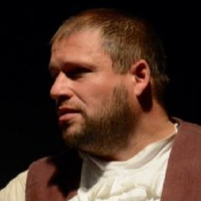
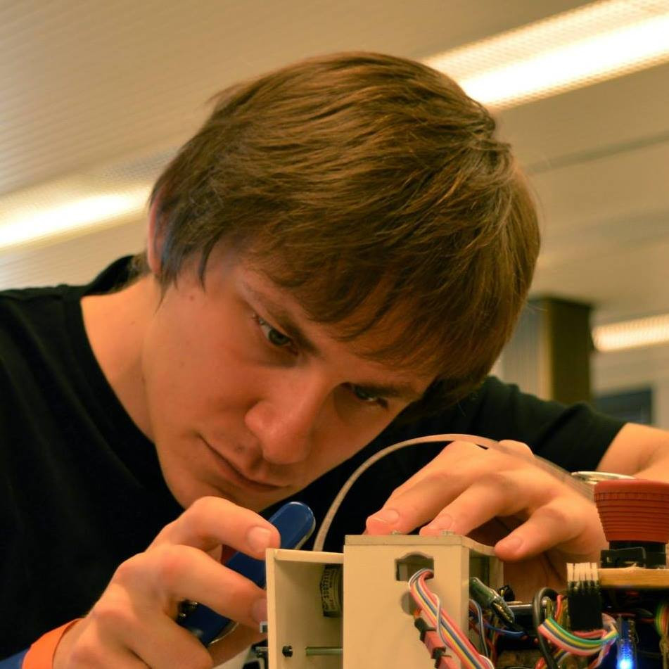
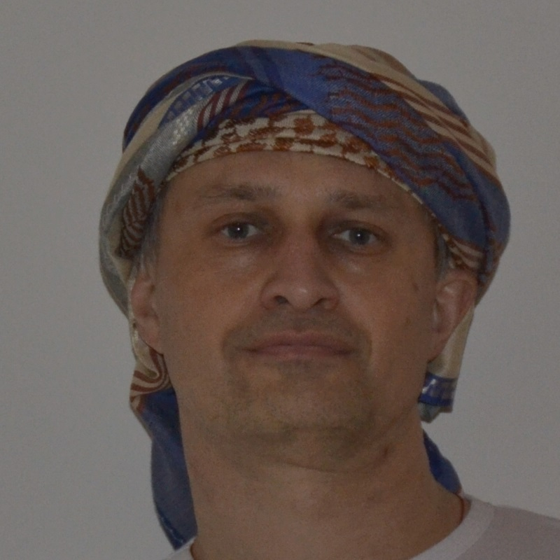

Jiří "Maara" Marek
Za největší vynález v historii lidstva považuju kolo. Dnes to vypadá jako samozřejmost, ale když se nad tím zamyslíte, tak v té době neexistovalo nic, co by se točilo. Podle mě to musel být geniální nápad.
A když bych si mohl vybrat, chtěl bych si vzlkoušet žít v odobí po druhé světové válce, někde ve velkém městě v U.S.A. Byl to právem hrdý stát, a ta motivace byla znát i na míře jejich technologického pokroku.
Navíc, tehdy neexistovaly mobily, takže lidi ještě museli přemýšlet.

Filip "Jupíčert" Kalčík
Za opravdu vydařený vynález považuji ledničku. Ta se opravdu povedla. Od té doby se i pes musí obávat o status nejlepšího přítele člověka.
No a k té ledničce už lidem chybí ke spokojenosti jenom vláda umělých inteligencí. Konečně by si nikdo nemohl připadat osamělý, když by ho počítače měli v merku čtyřiadvacet hodin denně a lidstvo by získalo společného nepřítele 😄.
Kdybych se mohl narodit v jiné době, tak bych asi zkusil raný neolit, který je dost podceňovaný. Přiznejme si, že na pracovní dobu lovce sběrače opravdu nemáme...

Honza Mrázek
Přemýšlel jsi někdy o tam, jak je tranzistor důležitý objev? Podívej se na libovolný předmět kolem tebe. Pokud to není svíčka z včelího vosku, tak byl pravděpodobně vyroben strojem řízeným počítačem, který je poskládaný z tranzistorů.
S tím se pojí druhá věc - mám pocit, že většina lidí jsou málo líní a málo si snaží svou práci usnadnit pomocí vynálezů.
Kdybych nežil teď, zajímalo by mě, jak bude svět vypadat za 100 let.
Eva "Efka" Pavloušková
Nejlepším vynálezem lidstva je pro mě stále toaletní papír. Dostal se sice do křížku se zubním kartáčkem, ale nakonec vyhrál toaletní papír.
Ve společnosti mi chybí staromódní gentlemani a pravé lady jako ze Saturnina.
Kdybych si mohla vybrat, chtěla bych žít v té době. Na jednu stranu tam kavalírství ještě nevymřelo, na stranu druhou je to už doba plná vynálezů a pokroku, který žití usnadňoval a dopřával i možnost odpočinku.

Vítězslav "Abbe" Mek
V duchu hesla láska a civilizácia prechádzajú cez žalúdok, mi k nemu a srdcu najbližšie leží treska rybací majonézový šalát s rohlíkmi.
Ako zvedavý človek by som chcel žiť v budúcnosti, tak o 100 rokov. Kam by ľudstvo asi dopracovalo? Boli by ešte nejaké národy a treska?